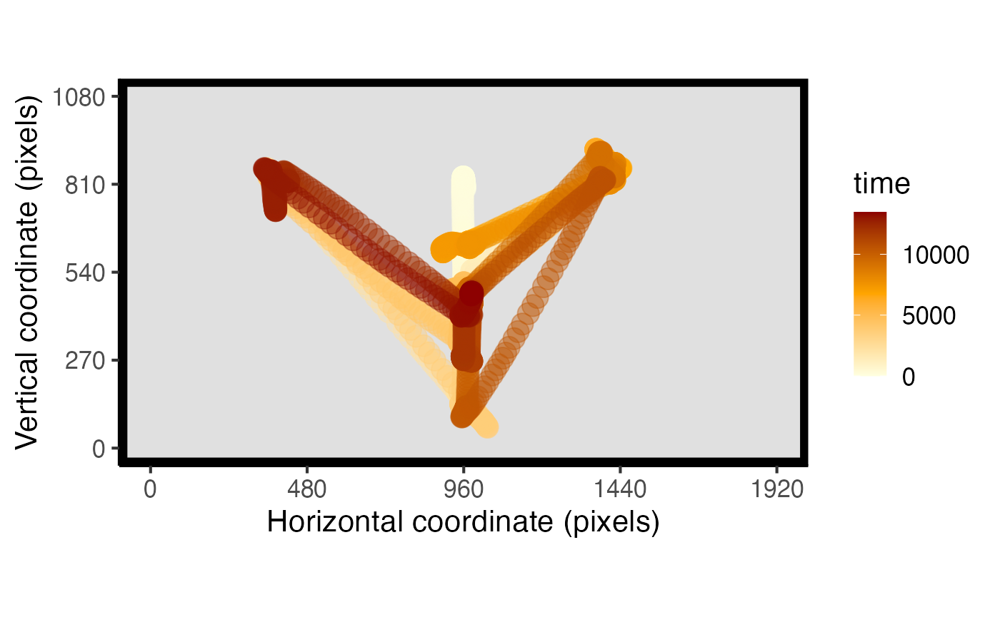
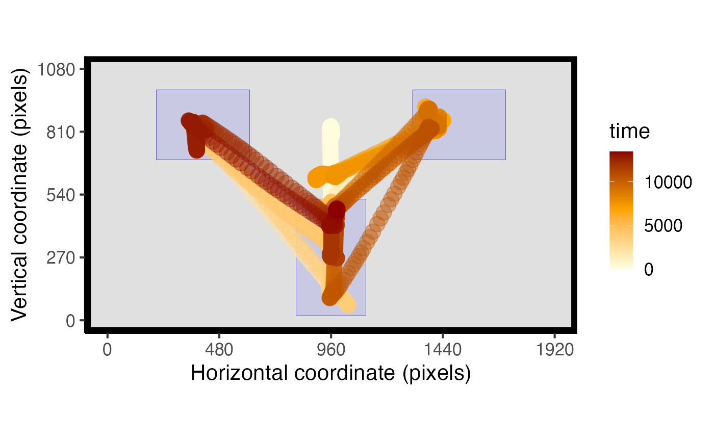
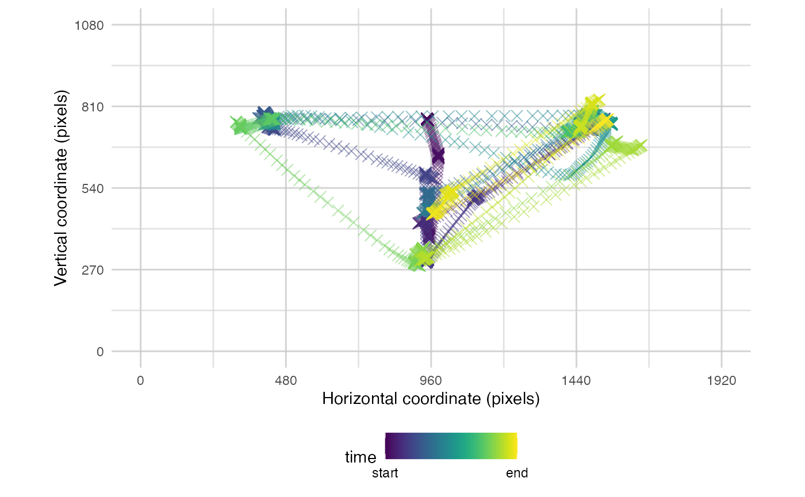
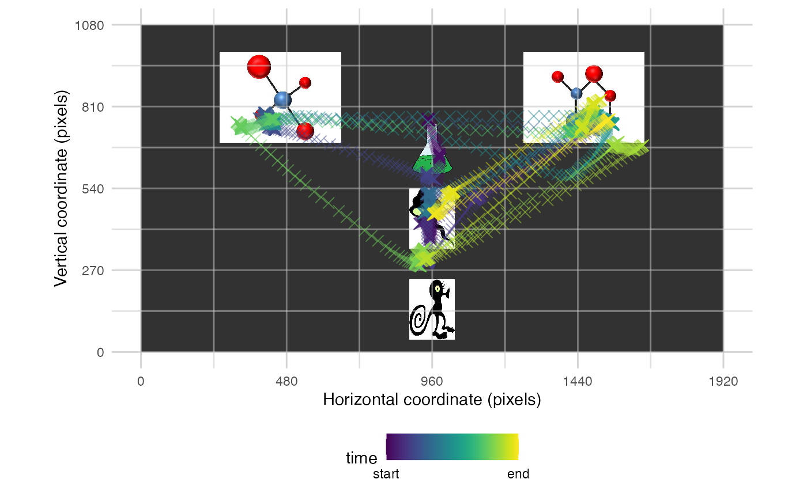
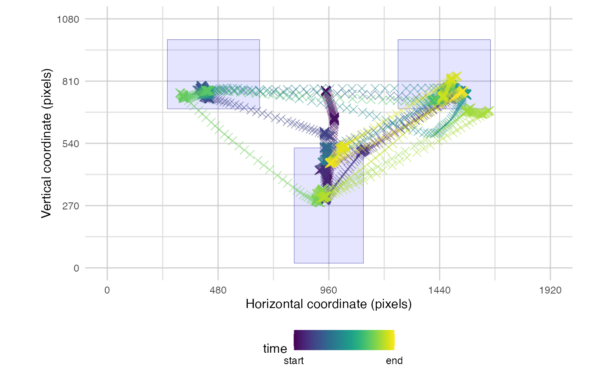
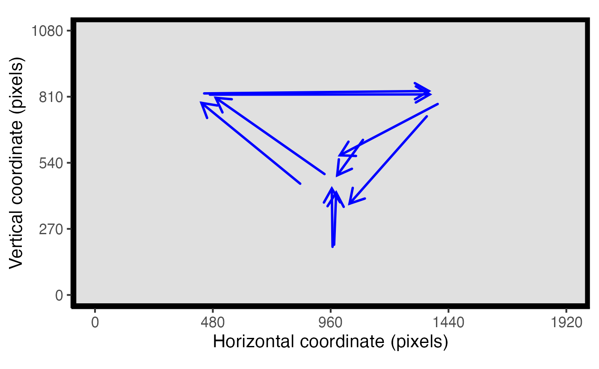

An introduction to eyetools
Matthew Ivory, Tom Beesley
eyetools.RmdThe eyetools package is designed to provide a consistent set of functions that helps researchers perform straightforward, yet powerful, steps in the analysis of eye-data. The suite of functions will allow the user to go from relatively unprocessed data to trial level summaries that are ready for statistical analysis.
You can install eyetools using the following code:
if (!require(devtools)) {
install.packages("devtools")
library(devtools)
}
install_github("tombeesley/eyetools")A quick note before starting: the following tutorial is written using only the dependencies contained within eyetools, so that means that if you are planning on following this tutorial through, you only need to install eyetools.
Data Manipulation and Preprocessing
Eyetools has built in example data that can be used while getting to grips with the package. For the purpose of this tutorial, we will start with a small dataset that contains binocular eye data from two participants (and six trials) from a simple contingency learning task (the data are from Beesley, Nguyen, Pearson, & Le Pelley, 2015). In this task there are two stimuli that appear simultaneously on each trial (to the left and right in the top half of the screen). Participants look at these cues and then make a decision by selecting an “outcome response” button.

Let’s load in this binocular data and explore the format. As we can see, the dataset is formed of 31,041 rows and 7 variables
## [1] 31041 7To get a basic idea of the contents of the data, we can look at the first 10 observations in the data
We can see that our seven variables contain the participant
identifier (pNum), the timepoint of the trial
(time), the left eye x and y coordinates
(left_x and left_y), the right eye coordinates
(right_x and right_y), as well as a trial
identifier (trial).
By default eyetools assumes that the resolution of eye data is in pixels (and a default screen size of 1920x1080), however the functions should work with any units (with no guarantee as it is not tested with units other than pixels).
head(HCL[HCL$pNum == 118,], 10)## # A tibble: 10 × 7
## pNum time left_x left_y right_x right_y trial
## <chr> <dbl> <dbl> <dbl> <dbl> <dbl> <dbl>
## 1 118 0 909. 826. 1003. 808. 1
## 2 118 3 912. 829. 1001. 812. 1
## 3 118 7 912. 826. 1010. 813. 1
## 4 118 10 908. 824. 1006. 807. 1
## 5 118 13 912. 824. 1005. 805. 1
## 6 118 17 912. 826. 1000. 802. 1
## 7 118 20 910. 826. 997. 806. 1
## 8 118 23 912. 825. 1005. 806. 1
## 9 118 27 911. 819. 1006. 808. 1
## 10 118 30 914. 821. 1013. 804. 1eyetools functions can accept either single-participant data or
multi-participant data. By default, most functions assume that data is
of a single participant unless a participant identifier
column called participant_ID is present,in which case the
data is handled as multi-participant. In cases where participants are
identified with a different variable, functions accept a parameter of
participant_ID that takes a character string of the
identifying column. In situations where participant_ID is not declared,
and when duplicated non-consecutive trials are detected (that implies
multi-participant data being input as single-participant), the function
will error. This is a good point to then check your data structure,
ensure that it is labelled correctly and ordered by trial and time.
Converting binocular data to monocular data
We need to combine the left and right eye x and y coordinates to get
a single pair of [x,y] coordinates for each timepoint. The eyetools
function combine_eyes() can do this for us. The
method parameter gives the option to either “average” the
two eyes, or we can use the “best_eye”. For “average”, the result is
based on the average of the two eyes for each sample, or for samples
where there is data from only a single eye, that eye is used. For
“best_eye”, a summary of the proportion of missing samples is computed,
and the eye with the fewest missing samples is used. Here we use the
default parameter “average”.
combine_eyes() is one of the few core eyetools functions
that doesn’t handle multi-participant/single-participant data
differently. Primarily because of the function’s construction and its
intended useage, it does not need to do so.
data <- combine_eyes(HCL)The above code returns a flattened list of all participants data, and if we take a look at just one participant, we are returned with a dataframe that has x and y variables in place of the left_* and right_* variables. This is the data format needed by many of the other eyetools functions: time, x, y, and trial. The ordering of the variables should not matter, however most of the functions will impose an ordering in how the information is returned.
head(data) # participant 118## pNum time trial x y
## 1 118 0 1 955.8583 816.5646
## 2 118 3 1 956.5178 820.6221
## 3 118 7 1 960.7383 819.7616
## 4 118 10 1 956.9727 815.3331
## 5 118 13 1 958.6214 814.0815
## 6 118 17 1 956.0035 814.1564Fixing missing data and repairing data
The next stage of the process would be to remove missing data within
continuous streams of eye data which are likely to be caused by
blinking. We can do this using the interpolate() function.
The maxgap parameter specifies the maximum number of consecutive NAs to
fill. Any longer gaps will be left unchanged. This is set as default to
25. The method parameter can either be “approx” (default) or “spline”
which are both calls to zoo::na.approx and
zoo::na.spline respectively.
Note that as the participant identifier column is not “participant_ID” (as eyetools expects as default), it needs to be specified in the function call.
data <- interpolate(data, maxgap = 25, method = "approx", participant_ID = "pNum")You can also request a report of the differences in NA values present before and after the interpolation as well
interpolate_report <- interpolate(data, maxgap = 25, method = "approx", participant_ID = "pNum", report = TRUE)
interpolate_report[[2]]## pNum missing_perc_before missing_perc_after
## 1 118 0.015838577 0.015838577
## 2 119 0.005402579 0.005402579An additional step that can be beneficial is to pass the eye data
through the smoother() function. This removes particularly
jerky transitions between samples and is critical for the analysis of
velocities in the eye-movements. For now, let’s store the smoothed data
in a new object. We can also ask for a plot of the data so that we can
visually inspect it to see how well it fits the data.
set.seed(0410) #set seed to show same participant and trials in both chunks
data_smooth <- smoother(data,
span = .1, # default setting. This controls the degree of smoothing
participant_ID = "pNum",
plot = TRUE) # whether to plot or not, FALSE as default## [1] "Showing trials: 4, 6 for participant 119"
The plot above shows the difference between the raw and smoothed data for a randomly selected participant and two random trials (simply for visualisation purposes and to keep the amount of plotting to a minimum).
With the default smoothing setting, we can see that the smoothed data
does not track the actual data as closely as it could. The lower the
value of span, the closer the smoothed data represents the
raw data. A visual inspection of the plot suggests that a span of .02 is
a good value for this data example. It is important that the fixations
and saccades are matched closely to ensure data quality. Oversmooth and
you end up with significant data loss, undersmooth and all the jerky eye
movement is preserved rendering the use of smoother()
meaningless, so a good inspection and testing of values can be
useful.
set.seed(0410) #set seed to show same participant and trials in both chunks
data_smooth <- smoother(data,
span = .02,
participant_ID = "pNum",
plot = TRUE)## [1] "Showing trials: 4, 6 for participant 119"
Counterbalancing positions
Many psychology experiments will position stimuli on the screen in a counterbalanced fashion. For example, in the example data we are using, there are two stimuli, with one of these appearing on the left and one on the right. In our design, one of the cue stimuli is a “target” and one is a “distractor”, and the experiment counterbalances whether these are positioned on the left or right across trials.
Eyetools has a built in function which allows us to transform the x
(or y) values of the stimuli to take into account a counterbalancing
variable: conditional_transform(). This function currently
allows for a single-dimensional flip across either the horizontal or
vertical midline. It can be used on raw data or fixation data. It
requires the spatial coordinates (x, y) and a specification of the
counterbalancing variable. The result is a normalised set of data, in
which the x (and/or y) position is consistent across counterbalanced
conditions (e.g., in our example, we can transform the data so that the
target cue is always on the left). This transformation is especially
useful for future visualisations and calculation of time on areas of
interest. Note that conditional_transform() is another
function that does not discriminate between multi-participant and
single-participant data and so no participant_ID parameter is
required
The keen-eyed will notice that the present data does not contain a
variable to specify the counterbalanced positions. This is contained in
a separate dataset that holds the behavioural data, including the
response times, the outcome, accuracy, and cue_order which
tells us whether the target cue was on the left (coded as 1) or on the
right (coded as 2).
data_behavioural <- HCL_behavioural # behavioural data
head(data_behavioural)## # A tibble: 6 × 8
## pNum trial P_cue NP_cue cue_order correct_out accuracy RT
## <chr> <int> <dbl> <dbl> <dbl> <dbl> <dbl> <dbl>
## 1 118 1 2 5 2 2 0 13465
## 2 118 2 2 6 2 2 0 7796.
## 3 118 3 1 6 2 1 1 5267.
## 4 118 4 1 5 2 1 1 9911.
## 5 118 5 2 5 2 2 1 4424.
## 6 118 6 2 6 2 2 1 5224.First we need to combine the two datasets based upon the participant
identifier. Once the data has been joined we can use
conditional_transform() to transform the x coordinates
across the midline.
data <- merge(data_smooth, data_behavioural) # merges with the common variables pNum and trial
data <- conditional_transform(data,
flip = "x", #flip across x midline
cond_column = "cue_order", #this column holds the counterbalance information
cond_values = "2",#which values in cond_column to flip
message = FALSE) #suppress message that would repeat "Flipping across x midline" Fixation Detection
In this next stage, we can start to explore the functions available
for determining fixations within the data. The two main functions here
are fixation_dispersion() and fixation_VTI().
Alongside these, is the option to compare_algorithms()
which produces a small number of metrics and plots to help visualise the
two fixation algorithms. We will first demonstrate and explain the two
algorithms before demonstrating compare_algorithms() as
this relies on the two fixation algorithms.
Dispersion Algorithm
fixation_dispersion() detects fixations by assessing the
dispersion of the eye position using a method similar to that
proposed by Salvucci and Goldberg (1996)1. This evaluates the
maximum dispersion (distance) between x/y coordinates across a window of
data, and looks for sufficient periods in which this maximum dispersion
is below the specified dispersion tolerance. NAs are considered breaks
in the data and are not permitted within a valid fixation period. By
default, it runs the interpolation algorithm and this can be switched
off using the relevant parameter.
data_fixations_disp <- fixation_dispersion(data,
min_dur = 150, # Minimum duration (in milliseconds) of period over which fixations are assessed
disp_tol = 100, # Maximum tolerance (in pixels) for the dispersion of values allowed over fixation period
run_interp = FALSE, # the default is true, but we have already run interpolate()
NA_tol = 0.25, # the proportion of NAs tolerated within any window of samples evaluated as a fixation
progress = FALSE, # whether to display a progress bar or not
participant_ID = "pNum") The resultant data output from fixation_dispersion()
presents data by trial and fixation. It gives the start and end time for
these fixations along with their duration and the x,y coordinates for
the entry of the fixation.
head(data_fixations_disp) # show sample of output data## pNum trial fix_n start end duration x y prop_NA min_dur disp_tol
## 1 118 1 1 0 173 173 959 811 0 150 100
## 2 118 1 2 197 397 200 961 590 0 150 100
## 3 118 1 3 400 653 253 958 491 0 150 100
## 4 118 1 4 803 1067 264 1370 839 0 150 100
## 5 118 1 5 1233 1390 157 997 545 0 150 100
## 6 118 1 6 1393 1703 310 969 477 0 150 100VTI Algorithm
The fixation_VTI() function operates differently to
fixation_dispersion(). It determines fixations by assessing
the velocity of eye-movements, using a method that is similar
to that proposed by Salvucci & Goldberg (1996). This applies the
algorithm used in VTI_saccade() (detailed below) and
removes the identified saccades before assessing whether separated
fixations are outside of the dispersion tolerance. If they are outside
of this tolerance, the fixation is treated as a new fixation regardless
of the length of saccade separating them. Compared to
fixation_dispersion(), fixation_VTI() is more
conservative in determining a fixation as smaller saccades are
discounted and the resulting data is treated as a continued fixation
(assuming it is within the pixel tolerance set by disp_tol).
In simple terms, fixation_VTI() calculates the saccades
within the data and identifies fixations as (essentially) non-saccade
periods. To avoid eye gaze drift, it applies a dispersion tolerance
parameter as well to ensure that fixations can be appropriately
localised to an x,y coordinate pair. One current limitation to
fixation_VTI() that is not present in
fixation_dispersion() is the need for data to be complete
with no NAs present, otherwise it cannot compute the saccades.
The fixation_VTI() works best on unsmoothed data (with
default settings), as the smoothing process alters the velocity of the
eye movement. When working with smoothed data, lowering the default
threshold parameter is recommended as the “jerky” saccadic starts are
less sudden and so the entry point of a saccade is sooner.
data_fixations_VTI <- fixation_VTI(data,
threshold = 80, #smoothed data, so use a lower threshold
min_dur = 150, # Minimum duration (in milliseconds) of period over which fixations are assessed
min_dur_sac = 20, # Minimum duration (in milliseconds) for saccades to be determined
disp_tol = 100, # Maximum tolerance (in pixels) for the dispersion of values allowed over fixation period
run_interp = TRUE,
smooth = FALSE,
progress = FALSE, # whether to display a progress bar or not, when running multiple participants
participant_ID = "pNum")
head(data_fixations_VTI) # show sample of output data for participant 118## pNum trialNumber fix_n start end duration x y min_dur
## 1 118 1 1 0 727 727 959.2461 598.7982 150
## 2 118 1 2 817 1150 333 1381.7121 839.4826 150
## 3 118 1 3 1230 1696 466 978.8340 500.6471 150
## 4 118 1 4 1733 2156 423 957.8373 170.8460 150
## 5 118 1 5 2263 2670 407 378.2771 831.3155 150
## 6 118 1 6 2773 3110 337 965.2839 399.2603 150
## disp_tol
## 1 100
## 2 100
## 3 100
## 4 100
## 5 100
## 6 100Saccades
This is also a sensible point to briefly highlight the underlying
saccade detection process. This can be accessed directly using
saccade_VTI(). This uses the velocity threshold algorithm
from Salvucci & Goldberg (1996) to determine saccadic eye movements.
It calculates the length of a saccade based on the velocity of the eye
being above a certain threshold.
saccades <- saccade_VTI(data, participant_ID = "pNum")
head(saccades)## pNum trial sac_n start end duration origin_x origin_y terminal_x terminal_y
## 1 118 1 1 2186 2253 67 818.8394 313.0595 430.7754 772.7604
## 2 118 1 2 2700 2723 23 554.9507 656.7780 703.8855 531.0949
## 3 118 1 3 2730 2750 20 738.0417 503.8376 846.5695 422.0547
## 4 118 1 4 3653 3743 90 973.0583 141.0650 478.9231 747.9415
## 5 118 1 5 4213 4233 20 460.3286 722.8386 577.2034 617.8567
## 6 118 1 6 4239 4263 24 607.2775 592.1919 765.9896 462.1740
## mean_velocity peak_velocity
## 1 225.7210 321.4263
## 2 210.6053 284.3140
## 3 175.6061 209.7484
## 4 219.2652 344.5652
## 5 195.7366 251.8862
## 6 214.3903 290.0800Comparing the algorithms
As mentioned above, a supplementary function exists to compare the
two fixation algorithms, the imaginatively named
compare_algorithms(). To demonstrate this, we apply it
against a reduced dataset of just one participant. It takes a
combination of the parameters from both the fixation algorithms, and by
default prints a summary table that is also stored in the returned list.
It is recommended to store this in an object as the output can be quite
long depending on the number of trials.
#some functions are best with single-participant data
data_118 <- data[data$pNum == 118,]
comparison <- compare_algorithms(data_118,
plot_fixations = TRUE,
print_summary = TRUE,
sample_rate = NULL,
threshold = 80, #lowering the default threshold produces a better result when using smoothed data
min_dur = 150,
min_dur_sac = 20,
disp_tol = 100,
NA_tol = 0.25,
run_interp = TRUE,
smooth = FALSE)## algorithm trial percent fix_n corr.r corr.p corr.t
## 1 vti 1 88.46249 19 0.6810053 0.000000e+00 59.088592
## 2 dispersion 1 84.05546 35 0.6810053 0.000000e+00 59.088592
## 3 vti 2 89.77759 17 0.6477846 2.616829e-278 41.097244
## 4 dispersion 2 82.20701 23 0.6477846 2.616829e-278 41.097244
## 5 vti 3 81.00063 12 0.2163931 3.463818e-18 8.801836
## 6 dispersion 3 81.63395 16 0.2163931 3.463818e-18 8.801836
## 7 vti 4 79.91927 15 0.4351612 1.219004e-137 26.344437
## 8 dispersion 4 84.32560 24 0.4351612 1.219004e-137 26.344437
## 9 vti 5 88.76320 12 0.5721358 3.834637e-116 25.383123
## 10 dispersion 5 81.67421 14 0.5721358 3.834637e-116 25.383123
## 11 vti 6 82.37548 12 0.7623090 7.953886e-298 46.580269
## 12 dispersion 6 83.84419 14 0.7623090 7.953886e-298 46.580269Areas of Interest
Once we have collected our fixation data (we will proceed using the
fixations_disp dataset), we can start looking at Areas of
Interest (AOIs) and then plots of the fixations.
For the AOI_ “family” of functions, we need to specify
where our AOIs were presented on the screen. This will enable us to
determine when a participant enters or exits these areas.
# set areas of interest
AOI_areas <- data.frame(matrix(nrow = 3, ncol = 4))
colnames(AOI_areas) <- c("x", "y", "width_radius", "height")
AOI_areas[1,] <- c(410, 840, 400, 300) # Left cue
AOI_areas[2,] <- c(1510, 840, 400, 300) # Right cue
AOI_areas[3,] <- c(960, 270, 300, 500) # outcomes
AOI_areas## x y width_radius height
## 1 410 840 400 300
## 2 1510 840 400 300
## 3 960 270 300 500AOI_time() analyses the total time on defined AOI
regions across trials. Works with fixation and raw data as the input
(must use one or the other, not both). This gives a cumulative total
time spent for each trial.
data_AOI_time <- AOI_time(data = data_fixations_disp, # just participant 118, otherwise incorporate into lapply() as above
data_type = "fix",
AOIs = AOI_areas,
participant_ID = "pNum")
head(data_AOI_time)## pNum trial AOI_1 AOI_2 AOI_3
## 1 118 1 1584 3254 5292
## 2 118 2 1066 1358 3626
## 3 118 3 733 569 2843
## 4 118 4 3438 2420 2346
## 5 118 5 1090 0 2123
## 6 118 6 879 783 2356The returned data show the time in milliseconds on each area of
interest, per trial. It is also possible to specify names for the
different areas of interest. Or you can request that the function
returns the time spent in AOIs as a proportion of overall time in the
trial, which requires an input vector that has the values, luckily this
is something contained in the HCL_behavioural obect.
AOI_time(data = data_fixations_disp, # just participant 118, otherwise incorporate into lapply() as above
data_type = "fix",
AOIs = AOI_areas,
participant_ID = "pNum",
as_prop = T,
trial_time = HCL_behavioural$RT) #vector of trial times## pNum trial AOI_1 AOI_2 AOI_3
## 1 118 1 0.1176383 0.2416636 0.3930189
## 2 118 2 0.1367421 0.1741986 0.4651282
## 3 118 3 0.1391737 0.1080352 0.5397965
## 4 118 4 0.3468838 0.2441707 0.2367043
## 5 118 5 0.2463722 0.0000000 0.4798608
## 6 118 6 0.1682554 0.1498794 0.4509781
## 7 119 1 0.1597284 0.3425844 0.2219270
## 8 119 2 0.1640896 0.1978148 0.3960240
## 9 119 3 0.2519910 0.2803862 0.2931970
## 10 119 4 0.2115344 0.4452717 0.1376355
## 11 119 5 0.2448598 0.3419782 0.2207165
## 12 119 6 0.2206532 0.2522878 0.3526349The AOI_seq() function analyses the sequence of entries
into defined AOI regions across trials. This works with fixation data or
raw data as the input.
data_AOI_sequence <- AOI_seq(data_fixations_disp,
AOI_areas,
AOI_names = NULL,
sample_rate = NULL,
long = TRUE,
participant_ID = "pNum")
head(data_AOI_sequence)## pNum trial AOI entry_n
## 1 118 1 3 1
## 2 118 1 2 2
## 3 118 1 3 3
## 4 118 1 1 4
## 5 118 1 3 5
## 6 118 1 1 6The returned data provide a list of the entries into the AOIs, across each trial. By default the data is returned in long format, with one row per entry.
Plotting Functions
Finally, eyetools contains two plot_* functions,
plot_seq() and plot_spatial(). These functions
are not designed to accommodate multi-participant data and work best
with single trials.
plot_seq() is a tool for visualising the timecourse of
raw data over a single trial. If data from multiple trials are present,
then a single trial will be sampled at random. Alternatively, the
trial_number can be specified. Data can be plotted across
the whole trial, or can be split into bins to present distinct plots for
each time window.
The most simple use is to just pass it raw data:
plot_seq(data_118, trial_number = 1)
But the parameters of plot_seq() can help exploration be
more informative. We can also add a background image and/or the AOIs we
have defined:
plot_seq(data_118, trial_number = 1, bg_image = "data/HCL_sample_image.jpg") # add background image
plot_seq(data_118, trial_number = 1, AOIs = HCL_AOIs) # add AOIs
You also have the option to split the time into bins to reduce the amount of data plotted
plot_seq(data_118, trial_number = 1, AOIs = HCL_AOIs, bin_time = 1000)
The other plotting function is plot_spatial(), which is
a tool for visualising raw eye-data, processed fixations, and saccades.
Fixations can be labeled in the order they were made. You can also
overlay areas of interest (AOIs) and customise the resolution.
plot_spatial(data = data_118, data_type = "raw")
#plot the spatial data for one trial only
plot_spatial(data = data_fixations_disp[data_fixations_disp$trial == 1,], # a LOT of fixations, let's take a sample
data_type = "fix")
plot_spatial(data = saccades, data_type = "sac")